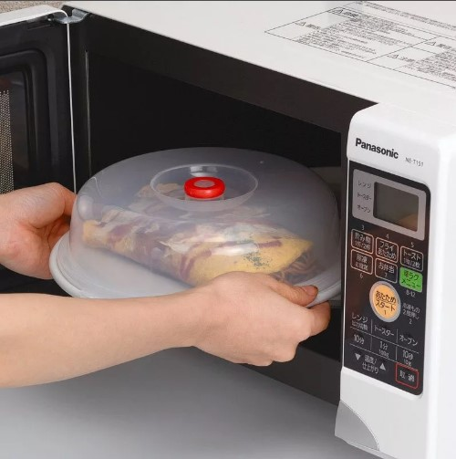
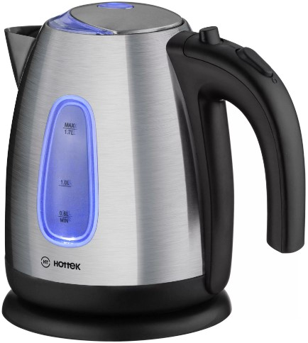

ЧАС ОБЕДА ПОДОШЁЛ…

|
1. Нельзя открывать дверцу во время работы микроволновой печи. |

|
1. Помни, что пар, идущий от кипящего чайника, может оставить серьёзный ожог. |
Источник и подробная информация о действиях на сайте:
http://www.culture.mchs.gov.ru
ТЕЛЕФОН СЛУЖБЫ СПАСЕНИЯ: 112